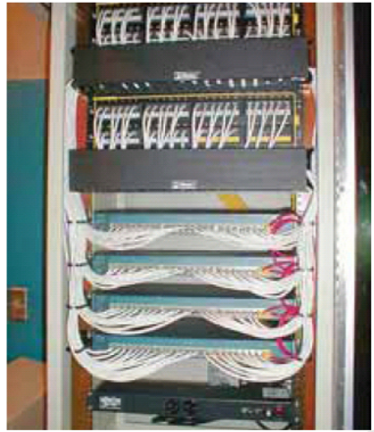

Cableado Estructurado#
Un sistema de cableado estructurado es el sistema colectivo de componentes, como cables, canalizaciones, conectores, etiquetas, espacios y demás dispositivos que deben ser instalados para establecer una infraestructura de interconexión para los componentes de una red de datos. Al instalar una red hay que tener en cuenta los factores
Económico: cableado funcional con mínimo coste
Logístico: la red debe adaptarse a los cambios en los equipos con el mínimo impacto
Subsistemas del cableado estructurado:
Cableado de área de trabajo
Cableado horizontal
Cableado de administración (armario de cableado, rack)
Cableado vertical (central, backbone)
Centro de cálculo
Cableado de equipamiento (armario de entrada al edificio)
Cableado del campus (acometida, cableado entre edificios)
Cableado Horizontal: Cableado que va desde el armario de telecomunicaciones a la toma de usuario.
No se permiten puentes, derivaciones o empalmes a lo largo de todo el trayecto del cableado
Se debe considerar su proximidad con el cableado eléctrico que genera altos niveles de interferencia electromanética (motores, elevadores, transformadores etc) y cuyas limitaciones se encuentran en el estándar ANSI/EIA/TIA 569
La máxima longitud permitida independientemente del tipo de medio de TX utilizado es 100 metros = 90 m + 3m usuario + 7 m patchpannel
Cableado Vertical: La interconexión entre los armarios de telecomunicaciones, cuarto de equipos y entrada de servicios.
Se utiliza un cableado multipar UTP y STP. También Fibra Óptica multimodo y monomodo
La distancia máxima sobre voz es de UTP 800 metros, STP 700 metros, Fibra MM 62.5/125um 200 metros
Etiquetado del cableado
Canaleta, indicado para montaje en pared o falso suelo


Rejiband, indicado para montaje en falso techo o falso suelo

Tubo corrugado, destinado a montajes en falso techo, falso suelo, e interiores de paredes (Obra o Pladur)

Armarios de comunicaciones (Racks)
En ellos se ubican los paneles de parcheo, dispositivos de interconexión (switch, hub, routers, etc.) y en ocasiones también los servidores, pueden necesitar ventilación adicional (ventiladores y turbinas)
En grandes redes se sitúan en habitaciones insonorizadas y a temperatura controlada

Herramientas especificas
Herramienta de bajo impacto (Krone)

Crimpadora

Tester

{kind=link}
{kind=link}
{kind=link}